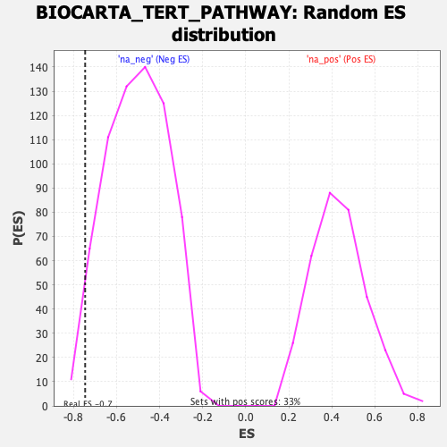

| | | Dataset | DE_genes2 |
| Phenotype | NoPhenotypeAvailable |
| Upregulated in class | na_neg |
| GeneSet | BIOCARTA_TERT_PATHWAY |
| Enrichment Score (ES) | -0.74624187 |
| Normalized Enrichment Score (NES) | -1.47723 |
| Nominal p-value | 0.032934133 |
| FDR q-value | 0.25406465 |
| FWER p-Value | 1.0 |
Table: GSEA Results Summary
 Fig 1: Enrichment plot: BIOCARTA_TERT_PATHWAY
Fig 1: Enrichment plot: BIOCARTA_TERT_PATHWAY
Profile of the Running ES Score & Positions of GeneSet Members on the Rank Ordered List
| PROBE | GENE SYMBOL | GENE_TITLE | RANK IN GENE LIST | RANK METRIC SCORE | RUNNING ES | CORE ENRICHMENT | | 1 | MAX | | | 2909 | 1.234 | -0.1203 | No |
| 2 | MZF1 | | | 3125 | 1.146 | -0.0815 | No |
| 3 | TP53 | | | 6453 | 0.253 | -0.2714 | No |
| 4 | HDAC1 | | | 6937 | 0.165 | -0.2932 | No |
| 5 | SP1 | | | 8313 | -0.059 | -0.3737 | No |
| 6 | MYC | | | 13438 | -2.055 | -0.5909 | Yes |
| 7 | SP3 | | | 16006 | -5.687 | -0.4892 | Yes |
| 8 | WT1 | | | 16520 | -11.524 | 0.0007 | Yes |
Table: GSEA details [plain text format]

Fig 2: BIOCARTA_TERT_PATHWAY: Random ES distribution
Gene set null distribution of ES for BIOCARTA_TERT_PATHWAY